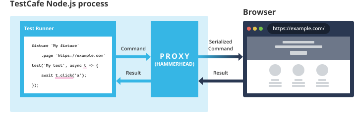

Client Functions and Script Injection for Page Interaction
You will learn how to run custom JavaScript code on the tested pages, how to use objects like the page model in this code, how to wait for an arbitrary event in the browser, and the fastest way to run a one-liner or an entire JS module.
End-to-end tests emulate how users interact with the application. In theory, this interaction consists of simple actions like a mouse click on an element, a key press, drag-and-drop, or file upload. The TestCafe API allows you to perform these basic actions with a single line of code. However, real-world applications tend to be more complicated than a static entry form. Some applications cannot be tested without closer interaction with tested pages. In this article, we review several examples and show how knowledge of TestCafe's internal architecture allows you to test complex or poorly designed pages with the help of client functions and script injection.
Use Client Functions to Run Code in the Browser #
Let's assume you need to click an element, but another element on the same page overlaps the first one due to design or implementation choices. If you simply call t.click, TestCafe waits for the target element to appear in the foreground. When a predefined timeout expires, TestCafe will eventually click the overlapping element. If the test author intended this click, the test completes successfully. However, the entire timeout period is wasted on aimless waiting. You can hide the overlapping element and avoid this pause if you run the following code:
test('Hide element', async t => {
const hideElement = ClientFunction(() => {
document.querySelector('#id').style.display = 'none';
});
await hideElement();
await t.expect(Selector('#id').visible).notOk();
});
You may also want to update that code and store the element ID in a variable:
test('Hide element', async t => {
const elementId = '#id';
const hideElement = ClientFunction(() => {
document.querySelector(elementId).style.display = 'none';
});
await hideElement();
await t.expect(Selector(elementId).visible).notOk();
});
A variable is a good idea and it can be used, but not in this manner. The test above would fail with an error:
My Fixture
× Hide element
1) An error occurred in ClientFunction code:
ReferenceError: elementId is not defined
On the surface, your JavaScript programming experience may tell you that the test is fine. Let's look into TestCafe's underlying mechanisms in greater detail to see why the test fails.
Under the Hood #
The TestCafe framework is based on a client-server architecture. The test code runs in a Node.js process (server) and uses a proxy server to interact with the browser (client).

Considering this fact, you can expect that:
- The test code has no direct access to the browser context.
- TestCafe interacts with the browser asynchronously (which is why missing
awaitissues are often posted in GitHub and StackOverflow). - The server-side TestCafe process and the client-side browser can only exchange serialized data.
We can simplify TestCafe's client-server interactions as follows:
- On the server, the TestCafe API exposes methods that execute actions and user code in the browser. When the API is triggered, TestCafe creates commands and passes them to the proxy: TestCafe Hammerhead.
- TestCafe Hammerhead transmits commands from the server to the browser and sends back the results when they are ready.
- On the client, TestCafe scripts receive these commands and execute them in the same way the browser handles user actions.
Pass Variables to Client Functions #
Create parameterized functions or use page model properties on the client side.
Let's get back to our code that tries and fails to introduce a variable.
test('Hide element', async t => {
const elementId = '#id';
const hideElement = ClientFunction(() => {
document.querySelector(elementId).style.display = 'none';
});
await hideElement();
await t.expect(Selector(elementId).visible).notOk();
});
This function has to be executed in the browser. As we mentioned earlier, only serialized data can travel between the client and the server. This is why TestCafe serializes this function (i.e., converts it to a string). This string is then evaluated when received on the browser side. You can now see why closures do not work for client functions.
What's the solution then? Before TestCafe converts the function to a string, a separate serializer module processes arguments passed to ClientFunction(). This is the same module that serializes all data that travel between the client and the server. This means that you can easily pass parameters to the client function and they arrive safely.
In addition, you can also find the dependencies property among the options that can be passed to the ClientFunction constructor.
TestCafe offers two options to access variables declared in test code.
The first option is to pass the variable as an argument:
test('Hide element', async t => {
const elementId = '#id';
const hideElement = ClientFunction(targetId => {
document.querySelector(targetId).style.display = 'none';
});
await hideElement(elementId);
await t.expect(Selector(elementId).visible).notOk();
});
But what if the element has no ID, so that it's not easy to find in the DOM tree? The second option is to pass a selector to the client function. Use the dependencies option in the ClientFunction constructor:
test('Hide element', async t => {
const elementSelector = Selector('#populate');
const hideElement = ClientFunction(() => {
elementSelector().style.display = 'none';
}, { dependencies: { elementSelector } });
await hideElement();
await t.expect(elementSelector.visible).notOk();
});
Note that client functions and selectors have a lot in common. Methods that create and run selectors derive from similar methods of client functions. To execute a complex selector query, you can pass a function to the Selector constructor, as you do for client functions. The main difference between them is the return type. Selectors should return DOMNode, while client functions should return any serializable value, or a Promise that resolves to such value.
Wait for a Custom Condition #
You can specify when TestCafe considers a page loaded.
Now let's see why you may want a client function to return a Promise.
TestCafe is designed to wait for the DOMContentLoaded and load events, as well as XHR requests (allowing three seconds for the latter), before tests begin. In rare instances, the wait time may be over before all scripts on the page are initialized. The following client function pauses the test until a custom condition is fulfilled (you can replace it with your own script completion indicator).
test('Wait for scripts', async t => {
const waitForScripts = ClientFunction(waitTimeout => {
function checkCondition () {
// Replace this line with a custom condition.
return true;
}
return new Promise((resolve, reject) => {
var timeout, interval;
timeout = setTimeout(() => {
clearInterval(interval);
reject('Timeout is exceeded.');
}, waitTimeout);
interval = setInterval(() => {
if (checkCondition()) {
clearTimeout(timeout);
clearInterval(interval);
resolve();
}
}, 100);
});
});
await waitForScripts(2000);
});
Even if a browser does not support Promises, this client function still works because TestCafe automatically adds the necessary polyfills when it processes this code.
Inject Scripts to Add Code Permanently #
Client functions are useful to interact with the tested page when necessary. You can even run a client function without saving it to a variable. However, everything you change in this function on the tested page is reverted once a redirect or page reload occurs. To modify the page permanently, inject client scripts into the tested page. The injected scripts are added to the <head> tag.
Scripts that Persist Throughout Testing #
Should you need to hide a banner, or modify an attribute for some element, you can organize client code that does it in a separate file:
script.js
window.addEventListener('DOMContentLoaded', function () {
const element = document.querySelector('your-selector');
element.setAttribute('foo-bar', 'baz');
});
Next, use your favorite API to attach this file in all tests (which eliminates repetitive beforeEach hooks):
Command Line Interface
testcafe chrome test.js --client-scripts script.js
API
runner.clientScripts('script.js');
Configuration file
{
"clientScripts": "script.js"
}
Injected Scripts Run First #
TestCafe adds the injected scripts to its automation code, so that they run before any other script on the page. You can therefore use injected scripts to alter the page behavior. For instance, you can override the window.open method for all tests as follows:
const mockWindowOpen = "window.open = function () { };";
fixture`My App`
.page`https://devexpress.github.io/testcafe/example/`
.clientScripts({ content: mockWindowOpen });
test('My test 1', async t => { /* ... */ });
test('My test 2', async t => { /* ... */ });
Your code remains almost unchanged. TestCafe only wraps it to catch exceptions.
Checking Other <head> Scripts for Errors #
Due to their location inside the <head> tags, injected scripts also allow you to access information that is not obtainable by other means.
Consider a scenario where you need to obtain unhandled exceptions thrown in another script in the <head> section. The TestCafe API contains the t.getBrowserConsoleMessages method that returns messages printed in the console. However, this method can only access messages posted by the console.log, console.warn, and console.error methods in page code. The t.getBrowserConsoleMessages method does not fetch errors thrown by the browser. You could try to use a client function to catch the exception, but client functions are executed after all <head> scripts are completed.
With script injection, you can add the following code:
script.js
window.unhandledErrors = [];
window.onerror = message => {
window.unhandledErrors.push(message);
};
In test code, you can create a client function to access messages in window.unhandledErrors:
test('Get Unhandled Errors', async t => {
const errors = await t.eval(() => window.unhandledErrors);
// ...
}).clientScripts('script.js');
Conclusion #
Client functions and script injection extend TestCafe's capabilities so that you can interact with the page directly. These features can configure your application at low levels to prepare it for testing, or fetch data about its execution in a custom manner. You can think of even more ways to use client functions and injected scripts. We hope this brief overview of the TestCafe architecture and sample usage scenarios help improve your understanding of these tools so that you can use them more effectively.